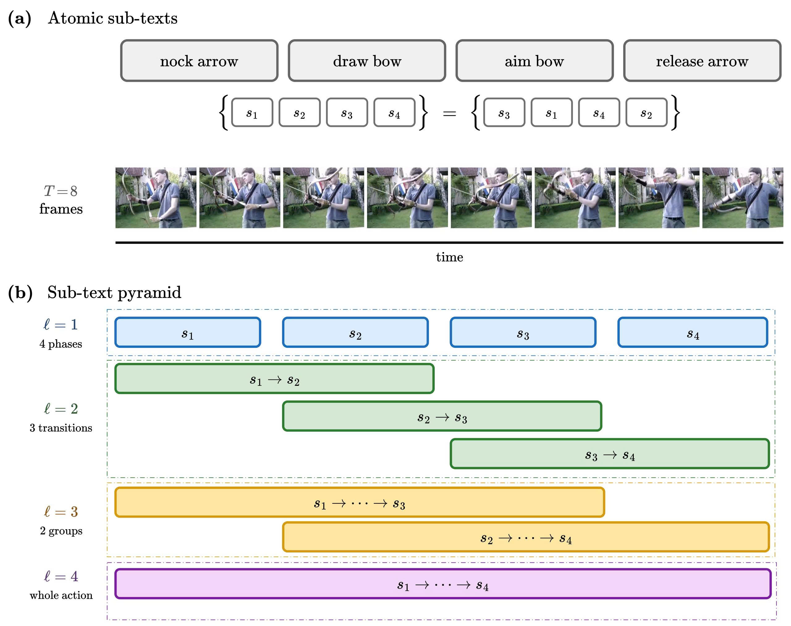
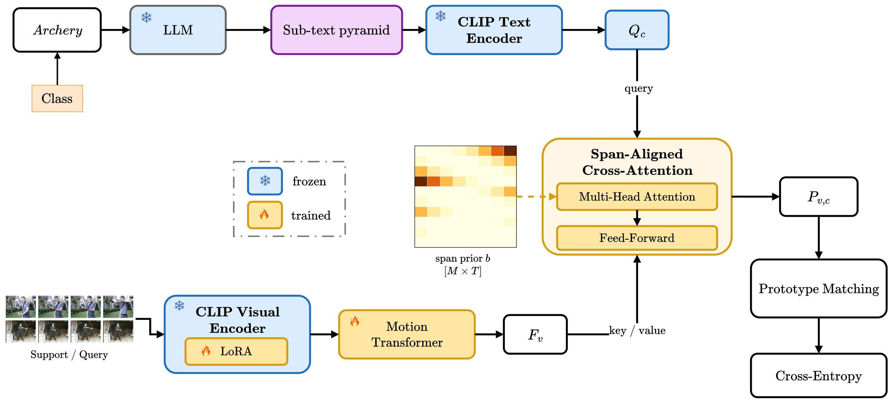
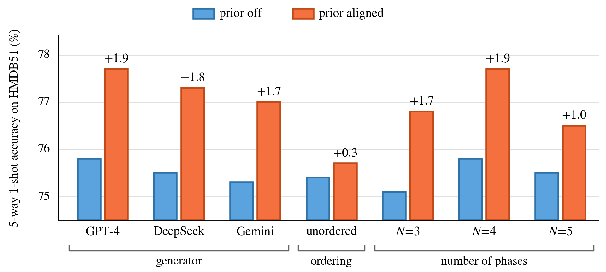

The phases are already generated in sequence. Concatenating contiguous spans preserves that order in the class representation at no parameter cost.
MuST: Multi-granularity Sub-Text Queries for Few-Shot Action Recognition
Faculty of Artificial Intelligence, Posts and Telecommunications Institute of Technology, Hanoi
Preprint 2026

Abstract
Few-shot action recognition with vision–language models typically represents an action class with a single text prompt, which captures class-level semantics but provides limited information about temporal progression. Recent work decomposes a class into atomic phase descriptions, but when these phases are treated as an independent set, the representation remains largely insensitive to their temporal order. We present MuST, a multi-granularity sub-text pyramid for few-shot action recognition. A language model decomposes each class name offline into N consecutive atomic phases, and MuST constructs all contiguous phase spans, yielding M = N(N + 1)/2 prompts that describe the action from individual phases to longer temporal transitions. The span structure further induces a coarse temporal geometry over the clip, which we use to build a span-aligned attention prior that softly biases each prompt's cross-attention towards the frames it is likely to describe. On HMDB51 and Kinetics-100 under the 5-way protocol, MuST improves over the atomic sub-text baseline by 3.8 and 1.9 points at 1-shot, respectively. A control that permutes span centres while keeping span widths fixed supports that the gain comes from temporal alignment rather than generic attention regularisation. Our source code is publicly available at https://trantrongnb.github.io/MuST/.
Method

Multi-granularity sub-text pyramid. Treating the N phrases as an unordered set would discard their temporal order. We instead retain every contiguous span (i, j) and render it as one sentence by joining its phrases with the connective Then. Because the text encoder reads an ordered token sequence, “draw bow. Then release arrow.” and “release arrow. Then draw bow.” produce different embeddings, so phase order enters the class representation without a temporal text module. The construction is string concatenation in front of a frozen encoder and adds no trainable parameters.
Span-aligned attention prior. The same span structure gives each prompt a coarse temporal extent: phases i through j occupy the interval [(i−1)/N, j/N] of the normalised timeline, which supplies both a centre and a width. We turn this into an additive bias on the cross-attention logits that is zero inside the interval and grows quadratically outside it, controlled by N + 1 learned scalars. The prior is a soft penalty rather than a hard mask, and as its gates approach zero the block reduces to ordinary cross-attention. It is definable only after the pyramid exists: a global prompt has no span, and atomic prompts share a single fixed width.
Experiments
Table 1. Comparison under the 5-way protocol
| Method | Backbone | HMDB51 | Kinetics-100 | ||
|---|---|---|---|---|---|
| 1-shot | 5-shot | 1-shot | 5-shot | ||
| HyRSM | ResNet-50 | 60.3 | 76.0 | 73.7 | 86.1 |
| MoLo | ResNet-50 | 60.8 | 77.4 | 74.0 | 85.6 |
| TEAM | ViT-B | 70.9 | 85.5 | 83.3 | 92.9 |
| CLIP-FSAR | CLIP ViT-B/16 | 75.8 | 87.7 | 89.7 | 95.0 |
| MuST (ours) | CLIP ViT-B/16 | 77.7 | 89.0 | 91.3 | 97.5 |
Results for competing methods are taken from their original papers using the same dataset splits. CLIP-FSAR is the closest comparison because it uses the same CLIP ViT-B/16 backbone.
Table 2. Ablation of the sub-text pyramid and span-aligned temporal prior (5-way 1-shot)
| Granularity | M | Span prior | HMDB51 | Kinetics-100 |
|---|---|---|---|---|
| atomic | 4 | off | 73.9 ± 0.36 | 89.4 ± 0.19 |
| atomic | 4 | aligned | 74.4 ± 0.41 | 89.6 ± 0.21 |
| pyramid | 10 | off | 75.8 ± 0.43 | 90.4 ± 0.26 |
| pyramid | 10 | aligned | 77.7 ± 0.34 | 91.3 ± 0.16 |
| pyramid | 10 | random | 76.1 ± 0.47 | 90.5 ± 0.27 |
The random control retains the same span widths and prior strength as aligned, but randomly permutes the span centres within each level. The aligned prior gains 1.9/0.9 points on the pyramid against only 0.5/0.2 on atomic sub-texts, so the second component depends on the first.
Table 3. Effect of the temporal-context module (5-way 1-shot)
| Configuration | Temporal context | HMDB51 | Kinetics-100 |
|---|---|---|---|
| pyramid+aligned | transformer | 77.7 ± 0.34 | 91.3 ± 0.16 |
| pyramid+aligned | conv | 77.0 ± 0.37 | 90.8 ± 0.21 |
| pyramid+aligned | off | 76.4 ± 0.41 | 90.2 ± 0.28 |
| atomic+off | transformer | 73.9 ± 0.36 | 89.4 ± 0.19 |
| atomic+off | off | 73.2 ± 0.43 | 88.9 ± 0.27 |
With the temporal context disabled entirely, pyramid+aligned still exceeds atomic+off by 3.2 points on HMDB51 and 1.3 on Kinetics-100, so the gains do not come from the motion Transformer.
Table 4. Granularity sweep on HMDB51 (5-way 1-shot, temporal prior disabled)
| Granularity | M | Span lengths retained | Accuracy |
|---|---|---|---|
| global | 1 | — | 72.0 ± 0.40 |
| full | 1 | |ω| = 4 | 73.1 ± 0.37 |
| atomic | 4 | |ω| = 1 | 73.9 ± 0.36 |
| atomic_full | 5 | |ω| ∈ {1, 4} | 74.7 ± 0.46 |
| pairs | 7 | |ω| ∈ {1, 2} | 75.3 ± 0.55 |
| pyramid | 10 | all | 75.8 ± 0.43 |
global uses the plain class prompt, whereas full concatenates all N phases into one sentence. One long sentence yields one representation for the entire action, while the pyramid represents and matches each span separately.

pyramid granularity. Each pair of bars reports accuracy with the prior disabled and enabled; Δ denotes the resulting gain. The three blocks compare text generators, temporal ordering, and the number of atomic phases N. The axis begins at 74.5%.A centre and a width per query exist only once spans are nested. The aligned prior is worth 1.9 points on the pyramid but 0.5 on atomic sub-texts.
Permuting span centres while keeping their widths falls 1.6 points below the aligned prior, so what matters is where the prior points.
Citation
@misc{tran2026must,
title = {MuST: Multi-granularity Sub-Text Queries for
Few-Shot Action Recognition},
author = {Tran, Trong and Tran, Thanh and Pham Duc, Cuong},
year = {2026},
note = {Preprint. Faculty of Artificial Intelligence, PTIT, Hanoi},
url = {https://github.com/trantrongnb/MuST}
}Contact
For questions, please contact cuongpd@ptit.edu.vn.